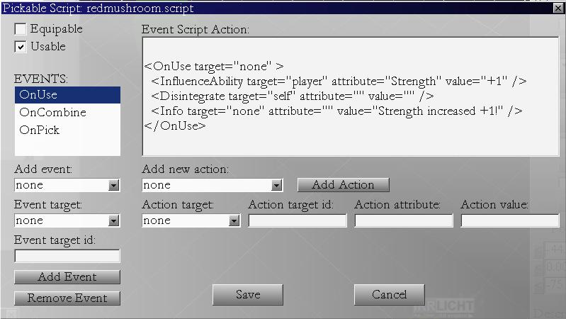

In this tutorial, we gonna explain scripting system, and make some scripts for pickable objects.
In this game editor, unique script system is designed.
There is predefined list of game Events, and possible game Actions.
You don't have to write the script your self, although you can if you like to,
all you have to do is select from given options.
First scripting tutorial will cover scripting of pickable items. Pickable items are
all those small items that you can put in your inventory. Some of them can be eaten (mushroom),
some of them equipped (sword), and some of them used on another game objects (key against the door).
To start with example, lets say you want to have mushroom in your game, and when
player eats the mushroom his strength score goes up by one. In this example, event
occurs when player eats the mushroom, and increase of strength ability is the Action.
All you have to do is connect event you want with action you like (i.e. using mushroom with strength increase).
Start Level Editor, go to "Pickables" tab of GameObject window, add one mushroom to your level.
While mushroom is selected, click on the "Pick Script" button from the properties menu.
This dialog comes up:

Note: Picture shows example script completed. You probably see empty text box.
First notice two checkboxes in the upper left corner. Here you have to define your item type.
Usable are all pickable items that you can eat, drink, mix, combine or use in any other way.
This is User Interface definition. Usable are all pickable items that you can click in your inventory
and something happends. Magic gem that causes your hair to grow when you click on it.
Equipable are passive items you can wear on your body to produce effect.
Clicking on the equipable item in the inventory won't produce any effect. But if you equip it, you are producing effect.
You will not be able to wear sandwitches (unless you define it here).
Thus, Mushroom would be Usable (because you can eat it) and Sword would be Equipable.
So for the Mushroom/Strength example, you would select Usable item, and OnUse event
would appear in the events combo box.
Notice "Add event" combo box, select event OnUse and click button: "Add Event"
And Event is created.
Now we need to define action that increases players strength.
Go to "Add New Action" combo box and select "InfluenceAbility" action.
From the Action target combo select "player".
For Action attribute type in "strength".
For Action value type in "+1". (Without "")
Click "Add Action" button.
This is it, this action will increase strength ability by 1.
But there are few more things we can do, first, it would be nice to
display information that mushroom has been eaten and that strength has been increased.
Select new action from "Add New Action", select "Info".
Action target should be "none". (But generally it is ignored)
Action attribute is also empty.
Action value should be the message you want to display: "Strength has been increased by +1!"
Click "Add Action" button.
Finally, select Disintegrate action.
Set Action target to be "self".
Click "Add Action" button.
This will cause mushroom to disappear after usage, after eating it.
As you can see, Script action is written in simple XML language, and you can
write scripts by your self if you like, but using buttons and combo boxes ensures
the script is written correctly.
Save the mushroom script by clicking on the Save button.
Script is saved in directory media/Scripts/Pickables and named something like mushroom.script
You can find others scripts in there already written for other pickable objects.
For example, rope.script is written so that when you use the rope, your health is damaged.
Poison bottle would be better example of decreasing health, but hey, Im demonstrating posibilities here :)
Save your map, edit game_config.xml to point to your map, and start game example to see how your script behaves in the game.
If you click on the mushroom it will be moved to your inventory.
To eat it, rightclick mushroom icon in the inventory.
Mushroom will disappear, your message will appear in console,
and your player's strength will increase by 1.
Petar Bajic
MPE (C) All Rights Reserved
Homepage: www.mystic-peanut.com
July, 21 2008.
Index